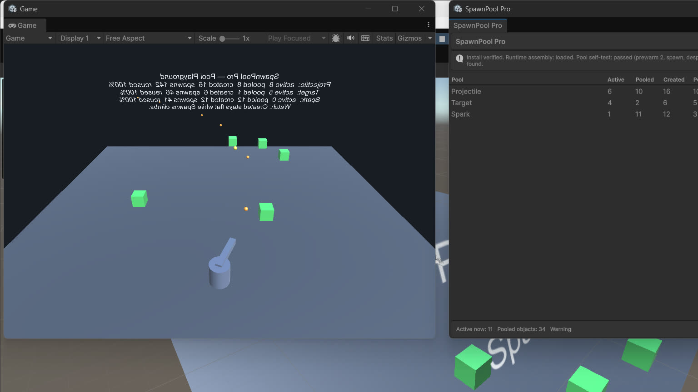

SpawnPool Pro · ByteLura
The Dashboard and Pool Analytics
Opening the dashboard
Tools > ByteLura > SpawnPool Pro. One window is both the product home and the live dashboard. It is Editor-only: it reads live memory, and a player build contains no dashboard code.

The pools table
One row per pool, refreshing on a 250 ms editor tick during Play Mode:
| Column | What it shows |
|---|---|
| Pool | The pool's name (the prefab name for GameObject pools). |
| Active | Instances checked out right now. |
| Inactive (shown as Pooled in the Quick Start) | Instances waiting in the pool, ready to reuse. |
| Created | Instances the pool has ever made. Flat is good: a flat Created counter while Spawns climbs is reuse, proven on screen. |
| Peak | The most instances ever active at once. |
| Spawns | Total spawns served. |
| Reused % | The share of spawns served from existing stock rather than newly created. |
| Cap hits | Spawns refused because the pool was at its cap. |
| Warnings | Double returns, foreign returns, and similar misuse, counted per pool. |
In Edit Mode the table is static. If pools exist but the editor is not playing, the window shows a hint to enter Play Mode to see live counts. With no pools registered yet, the window shows its empty state: one line explaining that pools appear the moment your game spawns something pooled, and one action — Open the Pool Playground.
The attention strip
The strip appears only when there is something to act on:
- Long checkouts — pools with an instance checked out past the threshold, with the pool name, the instance, and how long it has been out, in plain language with the one action that resolves it: if the object is not meant to be long-lived, look for a missed Despawn.
- Pools with warnings — the pool name and warning count.
Checkout ages are measured on the driver clock (unscaled time). The long-checkout flag is computed in the stats, not in the window — the dashboard displays the analytics; it does not recount anything.
The footer
Live totals across all pools — total active, total pooled objects, total warnings — plus the Clear All Pools button. In Play Mode it despawns everything; in Edit Mode it performs the full teardown described in Core Concepts.
The stats behind the window — PoolStats and PoolAnalytics
Every pool, typed and GameObject alike, can produce a PoolStats snapshot with these counters:
PoolName, ActiveCount, InactiveCount, TotalCreated, PeakActive, SpawnCount, DespawnCount, ReusedCount (spawns served from stock), CreatedOnSpawnCount (spawns that had to create), CapHits, OverflowCreates, Warnings, LongestCheckoutSeconds, and ReuseRatio (0 to 1).
PoolAnalytics aggregates all registered pools:
PoolCount— how many pools are registered.GetAllStats(results)— fills a list you supply with one snapshot per pool; the list is cleared and reused.TotalWarnings— warnings across all pools, plus pool-less warnings.
Snapshots are built on demand, only when something reads them. The hot path itself updates counters only — plain field increments on spawn and despawn — so reading analytics costs the game nothing per frame, and nothing at all when nobody reads them.
Tuning with the numbers
- Created climbing during play: the pool is still creating at runtime. Raise prewarm toward Peak.
- Peak well above prewarm: either raise prewarm, or accept the created-on-spawn spawns knowingly — the split between
ReusedCountandCreatedOnSpawnCounttells you exactly how many. - Cap hits above zero: spawns are being refused. Raise the cap, fix the leak that holds instances out (check
LongestCheckoutSeconds), or knowingly enable Allow Exceed Cap. - Warnings above zero: a double return or a foreign return happened. The count and the pool name point at the calling code to fix.
- LongestCheckoutSeconds far beyond an object's intended life: an instance is being held — most often a missed Despawn on one path.